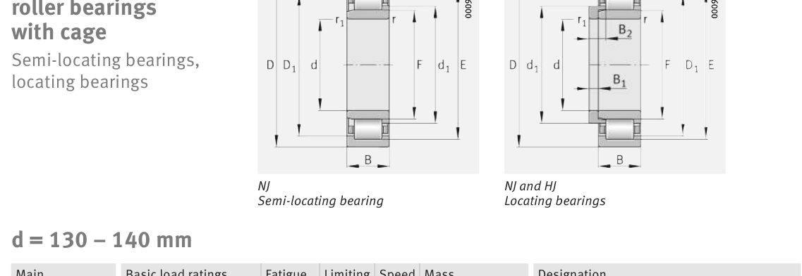

Original catalogue drawing - FAG Schaeffler HR 1, page 470

Scanned from the manufacturer catalogue page listing this part number. All part numbers printed on that table share the same drawing.
Scale cross-section
Blue = inner / outer ring, yellow = rolling element. Drawn to scale from this part's own
dimensions for selection reference only - not a manufacturing or assembly drawing.
Dimension table (mm / inch)
Symbol
Dimension
mm
inch
d
Bore diameter
140
5.5118
D
Outside diameter
300
11.811
B
Inner-ring / bearing width
102
4.0157
r
Chamfer (min)
4
0.1575
E
Roller-set outside dia.
264
10.3937
F
Roller-set bore dia.
180
7.0866
Notes
Weights are given in kg. Load ratings are shown in both the original catalogue units and the converted value (1 N = 0.2248 lbf). Data is provided for selection reference only - confirm against the latest official catalogue before ordering.
Main dimensions
Bore d (mm)
140
Outside dia. D (mm)
300
Width B (mm)
102
Inner-ring OD d1 (mm)
195.4
Inner-ring shoulder dia. D1 (mm)
251.7
Dimension E (mm)
264
Dimension F (mm)
180
Dimension s (mm)
9.2
Load ratings & speeds
Basic dynamic load rating Cr (lbs)
272019
Basic static load rating Cor (lbs)
312484
Basic dynamic load rating Cr (N)
1.21e+06
Basic static load rating C0r (N)
1.39e+06
Fatigue limit load Cur (N)
219000
Limiting speed nG (rpm)
3,450
Reference speed nB (rpm)
1,620
Weight
Weight (kg)
36.6
Mounting dimensions (fillets / shoulders)
Housing fillet r max (mm)
4
Chamfer r1 min (mm)
4
Shaft shoulder da (mm)
157
Shaft shoulder dc (mm)
198
Housing shoulder Da (mm)
283
Housing fillet ra max (mm)
3
Bearing life (ISO 281 basic rating life)
C / P
Equivalent load P (N)
L10 (106 rev)
L10h at 1,100 rpm
4
302,500
102
1,539
6
201,667
392
5,947
8
151,250
1,024
15,515
10
121,000
2,154
32,643
15
80,667
8,323
126,113
Basic rating life per ISO 281: L10 = (C/P)10/3 with C = 1,210,000 N. Hours = L10 x 106 / (60n). Life-modification factors for lubrication, contamination and temperature (aISO) are not included.
Source & traceability
Brand
FAG
Source catalogue
FAG / Schaeffler Rolling Bearings HR 1
Catalogue page
p.470 (dimensions)
Load ratings in newtons, fatigue limit load Cur, limiting speed nG and reference speed nB.
Send us the quantity you need and we will come back with price and
lead time, normally within 24 hours. Equivalent parts from other brands can be quoted at the same time.